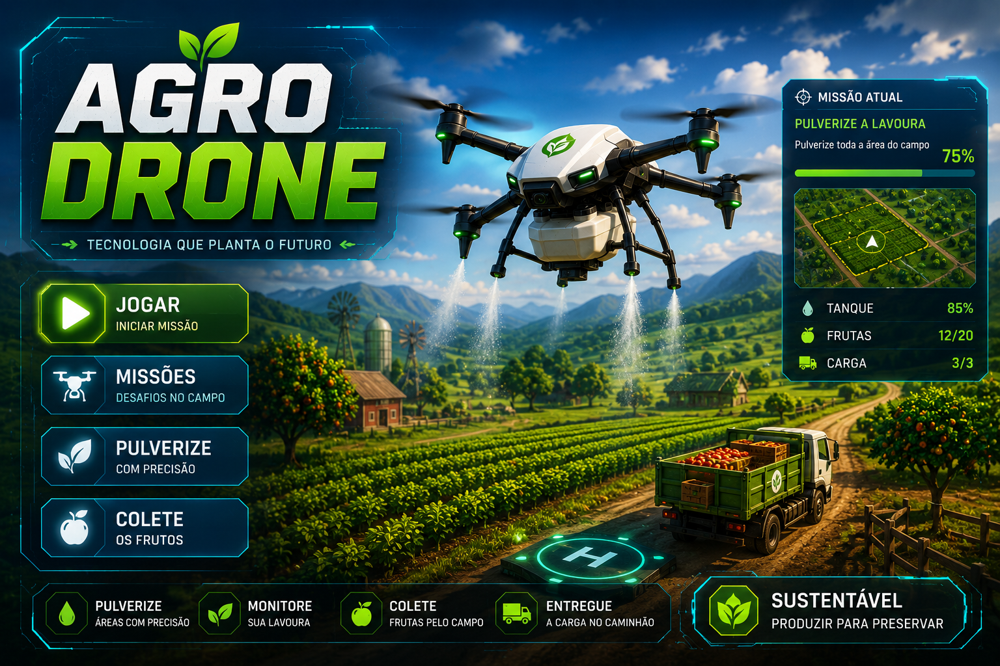

TECNOLOGIA AGRÍCOLA
Uso de Drones na Agricultura
Os drones revolucionaram o agronegócio moderno, trazendo monitoramento inteligente, redução de custos e maior eficiência na produção agrícola.
Explorar Tema
TECNOLOGIA AGRÍCOLA
Os drones revolucionaram o agronegócio moderno, trazendo monitoramento inteligente, redução de custos e maior eficiência na produção agrícola.
Explorar Tema
BENEFÍCIOS
Os drones permitem acompanhar grandes áreas agrícolas em poucos minutos, gerando imagens detalhadas e dados importantes para a tomada de decisões.
A utilização de drones reduz custos operacionais e melhora a eficiência do trabalho agrícola.
Os drones conseguem aplicar fertilizantes e defensivos apenas onde existe necessidade.

INOVAÇÃO
A integração de drones com inteligência artificial permite mapas detalhados das plantações, análise do solo e identificação de doenças.
Sensores térmicos e câmeras especiais ajudam produtores a tomarem decisões mais rápidas e eficientes.
SUSTENTABILIDADE
O uso de drones reduz significativamente o desperdício de água, fertilizantes e defensivos agrícolas.
A análise rápida das lavouras permite corrigir problemas antes que eles afetem a produtividade.
A agricultura de precisão reduz impactos ambientais e promove práticas mais sustentáveis.
Em poucos minutos é possível analisar áreas que levariam horas ou dias para serem inspecionadas manualmente.
MINI GAME
Controle um drone agrícola em missões dentro do campo. Abasteça o tanque, pulverize toda a área, colete frutas e entregue a carga no caminhão.
O jogo simula algumas funções reais dos drones utilizados na agricultura moderna, mostrando como a tecnologia pode ajudar produtores rurais.
Jogar Agora